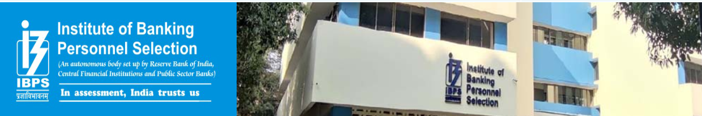

|  | ||||||||||||||||||||||||||||||||
|---|---|---|---|---|---|---|---|---|---|---|---|---|---|---|---|---|---|---|---|---|---|---|---|---|---|---|---|---|---|---|---|---|
| Home | AboutUs | Services | Strength | Highilghts | Important Event | Growth | Ph.D. Programme | Carrer | Tenders | Contact Us | ||||||||||||||||||||||
|
|
||||||||||||||||||||||||||||||||
| Candidate Grievance Lodging and Rebressal Mechanism | ||||||||||||||||||||||||||||||||
| Vision | Welcome to IBPS:A premier organisation in the field of Employment Testing,Selection,Assessment and Management of Human Resource in India |
|
||||||||||||||||||||||||||||||
| Governing Board | ||||||||||||||||||||||||||||||||
| Growth | ||||||||||||||||||||||||||||||||
| Mock Test | The Institute of Banking Personnel Selection (IBPS) is a central recruitment agency under the ownership of Ministry of Finance, Government of India that was started with an aim to encourage the recruitment and placement of young undergraduates, postgraduates and doctorates at the rank of Group 'A' officer, Group 'B' officer, Group 'C' employee and Group 'D' employee in nationalised banks and regional rural banks in India. It also provides standardised systems for assessment and result processing services to organisations. After nationalisation of banks in India in 1969, Indian banks needed to expand their branch network across the country so that they were more accessible to their customers. This required more staff but recruitment through methods such as advertising were unsatisfactory. Thus, the banks asked the National Institute of Bank Management (NIBM) to design a selection testing process through which they could hire proficient candidates. And as a result, a small unit named Personnel Selection Services (PSS) was established to handle these types of projects. A few years later, in 1984, PSS was converted into IBPS.[1] IBPS currently functions as an autonomous body that is mainly engaged in conducting competitive exams for recruitment to clerical and officers' posts in the banking sector. Earlier, candidates had to write multiple exams conducted by each bank for their vacancies. But from 2012, the Recruitment process has been changed. Now IBPS conducts four different recruitment processes namely CRP PO/MT, CRP RRBs, CRP Clerical, CRP Specialist Officers under which various exams take place every year for banking sector recruitment. The exams conducted by IBPS are as follows: IBPS PO/MT exam takes place for the recruitment of Probationary Officers and Management Trainees' in the participating banks, which are national public sector banks. IBPS SO exam takes place for the recruitment of Specialist Officers, which are Scale-I officers in the national public sector banks. IBPS Clerk exam takes place for the recruitment of clerks in the national public sector banks. IBPS RRB Officer Scale-I exam takes place for the recruitment of Scale-I Officers in Regional Rural Banks, this post is equivalent to Probationary Officers post in National Public Sector Banks. IBPS RRB Office Assistant exam takes place for the recruitment of Office Assistant in Regional Rural Banks, this post is equivalent to Clerk post in National Public Sector Banks. IBPS RRB Officer Scale-II and Scale-III exam takes place for the recruitment of Scale-II and Scale-III Officers in Regional Rural Banks, the post of Officer Scale-II is equivalent to Specialist Officer post and Officer Scale-III post is equivalent to Senior Manager in National Public Sector Banks.< |
|||||||||||||||||||||||||||||||
| CRP Specialist Officer | ||||||||||||||||||||||||||||||||
| CRP PO/MT | ||||||||||||||||||||||||||||||||
| CRP Clierial | ||||||||||||||||||||||||||||||||
| CRP RRBs | ||||||||||||||||||||||||||||||||
| FAQ's | ||||||||||||||||||||||||||||||||